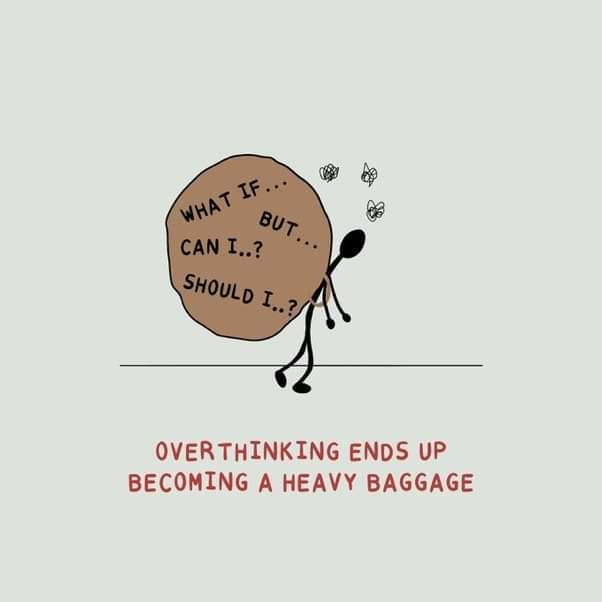
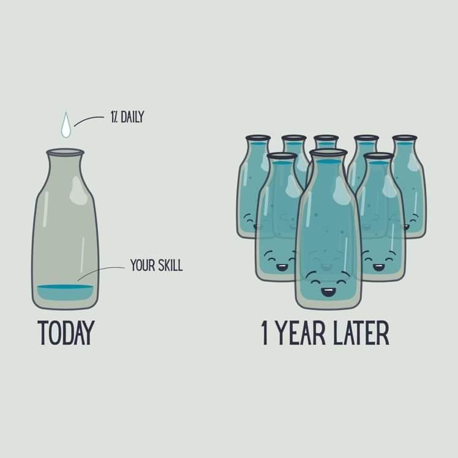
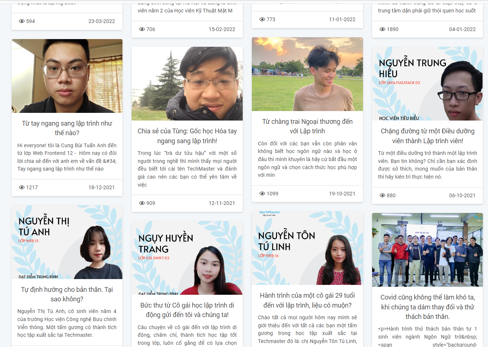
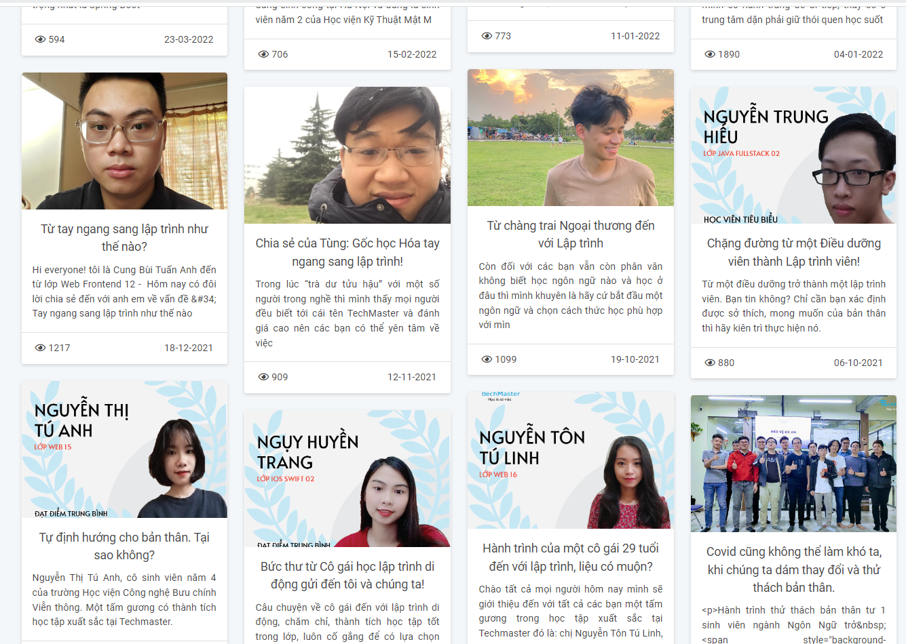
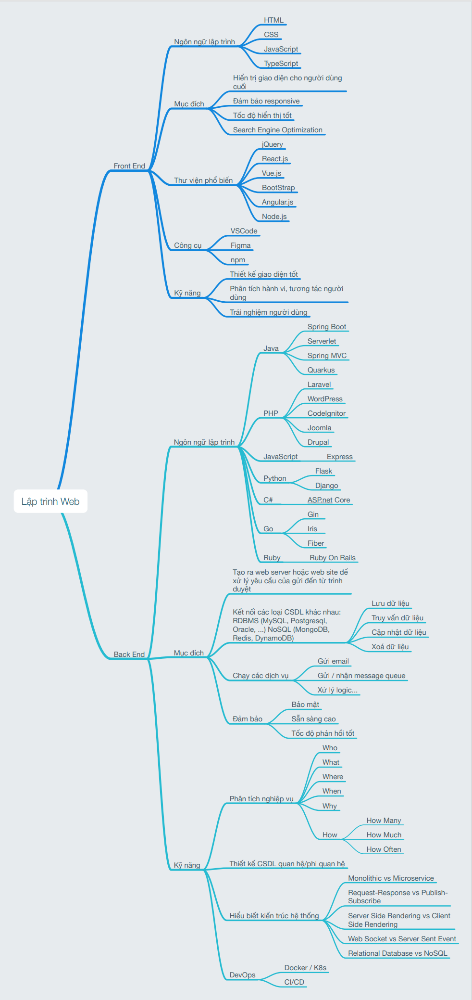
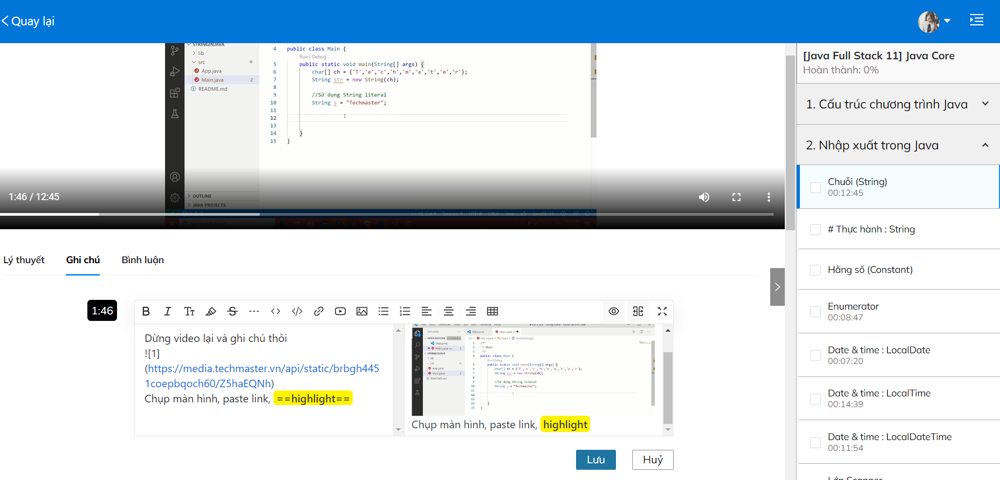

08 tháng 06, 2022 - 6 lượt xem
Spring Boot Lập Trình Web Java
Ngày khai giảng: 20/5/2022
Lịch học: 9:00 - 12:00 sáng thứ 2, thứ 4 và thứ 6 hàng tuần
Địa điểm: Tầng 12A tòa Viwaseen - 48 Tố Hữu - Hà Nội.
Chi tiết khoá học :
https://java.techmaster.vn/
Tư vấn - đăng kí học: Ms Hương - 0382416368 (zalo)
Đây là lớp học dành cho học viên đã xác định theo đuổi con đường trở thành lập trình viên.
Bạn đang chán nản vì công việc bấp bênh hoặc không có tương lai phát triển. Và rồi mong ước trở thành lập trình viên từ thời học sinh, sinh viên ngày nào bỗng quay trở lại. Nếu bạn đủ quyết tâm dừng công việc hiện tại để tập trung 100% sức lực cho việc học, tôi dám chắc khả năng thành công sẽ cao hơn.
Thời điểm 1,2 tháng học đầu tiên các thầy chỉ yêu cầu ít nhất 3 tiếng tự học, làm bài ở nhà. Nhưng kể từ tháng thứ 3, thời lượng tự học cũng cần điều chỉnh tăng dần để phù hợp với độ phức tạp của bài học. Vậy là đến tháng thứ 7, bạn đã biết cảm giác “code 8 tiếng” là như thế nào. Đó cũng chính là thời điểm hoàn thành đồ án để đi xin việc. Hãy kiên trì bền bỉ nhé !
 

Câu chuyện của một số học viên chuyển việc thành công đã được chia sẻ tại đây
Tham gia lớp học ban ngày đồng nghĩa bạn đã nghỉ việc hoặc chỉ chọn làm công việc part time để có thời gian học. Techmaster mong muốn hỗ trợ một phần học phí cho các bạn. Kể từ thời điểm 8/6/22, học phí các lớp Java Spring Boot sẽ có điều chỉnh như sau:
ĐẶC BIỆT- ƯU ĐÃI HỌC PHÍ:
Giảm 1 triệu/người khi đăng ký nhóm 2 trở lên
Giảm 10% học phí cho học viên là Nữ/Bộ đội xuất ngũ
Khóa học phù hợp với tất cả các đối tượng học viên yêu thích lập trình backend. Trong khóa học, thời lượng frontend chỉ chiếm 1 phần nhỏ, chúng ta sẽ cùng tập trung vào lập trình Backend nhé. Các bạn còn chưa rõ lập trình frontend và backend sẽ làm gì thì cùng xem ảnh này nhé
Chi tiết bài review tại
Giao diện giáo trình
Techmaster đã chia sẻ >40 video hướng dẫn sử dụng trong khóa học, có cả một số miniproject trong khóa học tại link dưới đây, mời các bạn tham khảo:
Spring Boot